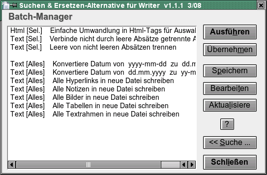

(Suchen & Ersetzen-Alternative für Writer)
Version 1.1
| Leistungsumfang | Suche | Ersetzen | Verwendung einer Batch-Datei | Einschränkungen | Entwicklungsgeschichte |
Autor: Tomas
Bilek – © 2007-2008
Lizenz: LGPL, siehe
http://www.gnu.de/documents/gpl-3.0.de.html
Dieses Makro ist eine hoffentlich nützliche Erweiterung, wird jedoch OHNE JEDE GARANTIE zur Verfügung gestellt.
Schnelle Auswahl mit Voreinstellungen(reguläre und Erweiterte Ausdrücke)
Zählen gefundener Elemente mit der Schaltfläche [ Zählen ]
Gesuchter oder ersetzter Text kann auch über mehrere Absätze gehen
Möglichkeit hexadezimaler oder dezimaler Eingabe von Zeichen für Suchen oder Ersetzen
Suche nach manuellen Seiten- und Spaltenumbrüchen zwecks Deaktivierung oder geänderter Anordnung
Suche nach Absatzblöcken zwischen zwei Text-Markierungen
Ausweitung oder Verringerung des gefundenen Text-Blocks auf eine vorgegebene Zahl von Buchstaben
Multiples Suchen und Ersetzen in einem Schritt
Suche: Notizen, Textfelder, Querverweise und Referenz-Markierungen nach Inhalt, Name oder Platzierung der Markierung
Suche von Objekten (Tabellen, Bilder und Text-Rahmen) nach dem Namen; Ersetzung durch Text, Objekt-Namen oder Inhalt der Zwischenablage möglich
Suchen und Einfügen von Fuß- und Endnoten (ab Version OOo 2.3). Es ist möglich, in einem Schritt alle Fuß- und Endnoten auszuwählen und ihnen jeden gewünschten Stil zuzuweisen
Suche nach ähnlich oder gleich formatierten Textteilen, bezogen auf die Cursor-Position
Verwendung von Zeichenketten innerhalb von Klammern () als Referenz \# in ersetztem Text
Möglichkeit, in gefundenem oder ersetztem Text Änderungen vorzunehmen: Absatzformat, Zeichenformat, Listenvorlagen, Hyperlink URL und Text-Eigenschaften
Möglichkeit, den Inhalt der Zwischenablage einzufügen, Einfügen des Zählers der Ersetzung und der Seitenzahl
Umleitung von Ergebnissen auf andere Text-Dateien
Batch-Modus: Speichern und laden von Parametern für Suchen und Ersetzen; es ist möglich, mehrere Such- und Ersetzungs-Vorgänge nachträglich zu einem einzelnen Vorgang zu speichern speichern und danach gemeinsam auszuführen.
Tipp für Tastatur-Kürzel bei häufiger Benutzung:
1. Dialog Extras - Anpassen - Tastatur öffnen
2. Im Feld Bereich im unteren Teil des Feldes OpenOffice.org Makros - user - AltSearch – AltSearch anklicken
3. Im Feld Funktion die im Folgenden
genannten Funktionen wählen, im Feld Tastenkombinationen das
genannte Tastatur-Kürzel markieren und mit Speichern
bestätigen:
_AltSearch und Tastatur-Kürzel Ctrl+H
zuordnen (Such-Dialog öffnen);
_FindNext und
Tastatur-Kürzel Ctrl+L zuordnen (nächster Fund des
Suchbegriffs nach der Cursor-Position, ohne Öffnen des
Dialogs);
_FindBack und Tastatur-Kürzel Ctrl+Shift+L
zuordnen (nächster Fund des Suchbegriffs vor der
Cursor-Position, ohne Öffnen des Dialogs);
Enthält oft benutzte oder komplizierte reguläre Ausdrücke oder Parameter für die Eingabe. Nach Auswahl eines Eintrags werden die zugehörigen Parameter in das Eingabefeld (oder in beide Felder) übertragen. Sie können auf verschiedene Wiese eingefügt werden: an Anfang oder Ende, an die Cursor-Position oder anstelle des gesamten Original-Textes. Gleichzeitig ist der Schalter "Regulärer Ausdruck" aktiviert.
Auswahlfeld Regulär
Enthält hilfreiche reguläre Ausdrücke. Ihre Beschreibung findet sich in der OOo-Hilfe unter der Bezeichnung Liste der regulären Ausdrücke.
Einschränkungen:
Syntax der verwendeten regulären Ausdrücke ist nicht voll kompatibel
mit der von OOo benutzten. Probleme gibt es vor Allem bei der Suche,
bei Verwendung von Platzhaltern wie * + ? {n,n}
nach Zeichenketten in Klammern ().
Z.B . (Mi)?ster
wird nicht gefunden (wenngleich mit der Schaltfläche [
Zählen ] die korrekte Anzahl ausgegeben wird). Wird nach
(.*)any oder (.+)any
gesucht, so wird die jüngste passende Entsprechung gefunden, im
Gegensatz zum OOo-Standard, der nach der ältesten sucht.
Wenn die Kompatibilität gewahrt werden muss, ist es möglich, den gesamten Suchbegriff zusätzlich in Klammern einzuschließen: ((Mi)?ster). Allerdings geht dadurch die Möglichkeit verloren, den Unter-Suchbegriff in Ersetzungen als Referenz zu verwenden, \# wobei # die Referenz-Nummer (max. 9) des Unter-Suchbegriffs darstellt. Ebenso ist es nicht möglich, gleichzeitig den Unter-Suchbegriff als Referenz (festgelegt durch Klammern ()) sowohl für Suche als auch für Ersetzung zu benutzen. Siehe auch Unter-Suchbegriffe.
Weitere Parameter für spezielle Platzhalter:
\l – steht für jedes alphabetische Zeichen; ebenso wie [:alpha:]{1,1}.
\d – steht für Dezimalzahlen; ebenso wie [0-9].
\p – steht für das Absatz-Ende,
im Gegensatz zum OOo-Standard $, steht auch für leere Absätze. Die Platzhalter +, *, {min,max} können verwendet werden.
\p{1,} - findet das nächst stehende Absatz-Ende, dem ein unbegrenzter Block leerer Absätze folgt. Genau wie \p*.
\p{2,4} - findet das nächst stehende Absatz-Ende, dem mindestens einer, maximal drei leere Absätze folgen, insgesamt also mindestens zwei, maximal vier Absätze nacheinander..
Einschränkungen: Langsam bei separater Anwendung. Manchmal Probleme bei der Rückwärts-Suche.
\xhhhh – ermöglicht die Eingabe von Zeichen über den Hexadezimal-Code (als hhhh)
\#ddddd - ermöglicht die Eingabe von Zeichen über den Dezimal-Code (als ddddd)
Wenn das folgende Zeichen keine Zahl ist, ist es nicht erforderlich, alle 5 Stellen für ddddd auszufüllen. Andernfalls muss von links mit Nullen aufgefüllt werden
.
\c – sucht nach manuellen Spalten-Umbrüchen. Einschränkungen: Langsam bei separater Anwendung.
\m - sucht nach manuellen Seiten-Umbrüchen
Einschränkungen: Langsam bei separater Anwendung. Bei Verwendung von Unter-Suchbegriff (), muss der Parameter \m ohne Abstand am Anfang der Suchkette stehen: \m(...) nicht jedoch so (...)\m.
\s – steht für alle Leerzeichen: Leerzeichen, geschütztes Leerzeichen, Tabulator, manueller Zeilen-Umbruch.
Genau wie [ \xA0\x9\xA].
\S - steht für geschütztes Leerzeichen (\x00A0 oder \#160)
Auswahlfeld Erweitert
[::BigBlock::] - sucht nach Absatz-Blöcken (unbegrenzte Länge), begrenzt durch bekannten Text
start[::BigBlock::]end – sucht zunächst nach start und nach Auffinden nach end. Bei erfolgreicher Suche wird der gesamte Block markiert.
In der Ersetzungs-Zeichenkette können die Parameter \b, &, \e benutzt werden, um die Inhalte von start, found block of paragraphs, end.einzufügen.
Einschränkungen: Zwischen Start- und End-Markierung kann das Zeichen || nicht angewendet werden - für multiples Suchen-Ersetzen siehe weiter unten.
[::Grow n1,n2::] - der gefundene Text-Block wird erweitert um n1 Zeichen nach linkst und n2 Zeichen nach rechts
[::Grow -1,-1::]text – wenn das Wort im Text vorkommt text so wird es zwar gefunden, markiert wird aber nur ex.
Einschränkungen: [::Grow... muss immer am Anfang der Such-Zeichenkette stehen und erst danach der Such-Begriff. Die Umschalt-Taste führt zu negativen Werten, dann ist es möglich (abhängig von Größe und Inhalt des Such-Begriffs), dass bei der nächsten Suche dieselben Stellen noch einmal gefunden werden.
text1||text2||text3||… - multiples Suchen-Ersetzen in einem Schritt
Diese Option schließt am Ende der Suche an und ersetzt ||, schränkt partielles Suchen und Ersetzen ein.
Suche nach:
text1||text2||text3
Ersetzen durch:
neco1||neco2||neco3
Wiederholte Suche
nach text1 ersetzt durch neco1,
weitere Suche nach text2 ersetzt durch neco2
usw.
Einschränkungen: der Parameter [::BigBlock::] kann nicht benutzt werden, auch Unter-Suchbegriff. kann nicht gleichzeitig benutzt werden.
Suche nach Objekten
[::Note::] - sucht Notizen (gelbe Felder) nach ihrem Inhalt
[::Note::] - findet alle Notizen
[::Note::]notiz1 - findet Notizen, die die Zeichenfolge notiz1 enthalten
Einschränkungen: Sucht nur nach Zeichenfolgen im Inhalt der Notizen – reguläre Ausdrücke können nicht verwendet werden.
[::Field::] - sucht Textfelder nach ihrem Inhalt
[::Field::] - findet alle üblichen Textfelder
[::Field::]feld1 findet alle Textfelder, die im Dokument den Text feld1 anzeigen
Einschränkungen:
Wie bei [::Note::]. Siehe oben.
Bedingte
Felder (z.B. verborgene Felder) können nicht gesucht werden.
[::TextFrame::] - sucht Textrahmen nach ihrem Namen
[::TextFrame::] - findet alle Textrahmen
[::TextFrame::]rahmen1 - findet Textrahmen, die in ihrem Namen die Zeichenfolge rahmen1 enthalten
Einschränkungen: 1. Bei Anwendung der Schaltfläche [ Suche ] wird der nächste Textrahmen nur gefunden, wenn er markiert ist oder der Cursor sich innerhalb des Textrahmens befindet. Wenn der Cursor an anderer Stelle des Textes steht, wird jeweils der nächste Textrahmen aus der internen Textrahmen-Liste gefunden. Die Option "Nur aktuelle Auswahl" ist derzeit noch nicht funktionsfähig.
2. Die Nutzbarkeit der Schaltfläche [ Ersetze ] ist daher als Konsequenz aus Punkt 1. stark eingeschränkt.
3. Die Textrahmen werden in der Reihenfolge gefunden (unglücklicherweise und nur vorläufig, hoffe ich), in der sie ins Dokument eingefügt wurden und nicht in der Reihenfolge, in der sie vom Anfang bis zum Ende des Dokumentes auf dessen Seiten aufeinander folgen.
4. Sucht nur nach Zeichenfolgen im Namen des Textrahmens - reguläre Ausdrücke können nicht verwendet werden.
Die Schaltflächen [ Suche alle ] und [ Ersetze allel ] haben volle Funktionalität, inklusive der Option "Nur aktuelle Auswahl".
[::Picture::] - sucht Bilder nach ihrem Namen
[::Picture::] - findet alle Bilder
[::Picture::]abb1 -findet Bilder, deren Name die Zeichenfolge abb1 enthält
Einschränkungen: Wie für [::TextFrame::]. Siehe oben.
[::TextTable::] - sucht Tabellen nach ihrem Namen
[::TextTable::] - findet alle Tabellen
[::TextTable::]tab1 – findet Tabellen, deren Name die Zeichenfolge tab1 enthält
Einschränkungen: Wie für [::TextFrame::]. Siehe oben.
[::Footnote::] - sucht nach Fußnoten (FN)
[::Footnote::] findet die FN-Anker
[::Footnote::]5 findet FN-Anker, die die Zeichenfolge 5 enthalten
[::Footnote::]\\text findet FN-Anker, die die Zeichenfolge text enthalten. Wenn die Schaltfläche [ Suche alle ] benutzt wird, werden Texte aller FN, die die Zeichenfolge text enthalten, markiert.
[::Footnote::]\\ mit der Schaltfläche [ Suche alle ] werden Texte aller FN (nützlich bei unterschiedlichen Absatz-Formaten in den FN) markiert
Einschränkungen: Einwandfreie Funktion ab Version OOo 2.3
[::Endnote::] - sucht nach Endnoten
Verwendung von Parametern und Einschränkungen wie bei [::Fußnote::]. Siehe oben.
[::ReferenceMark::] - sucht nach Ziel-Markierungen von Querverweisen
[::ReferenceMark::] findet jeden Textsatz als Querverweis-Markierung
[::ReferenceMark::]text findet Textsatz als Querverweis-Markierung, der die Zeichenfolge text enthält
[::ReferenceMark::]\\ref1 findet Textsatz als Querverweis-Markierung, dessen Name die Zeichenfolge ref1 enthält
[::ReferenceMark::]\\\\ findet Textsatz mit leerem Text als Querverweis-Markierung
[::Reference::] - sucht nach Textfeld (Querverweis), das der Markierung zugeordnet ist
[::Reference::] findet alle Textfelder von Querverweisen
[::Reference::]oben findet Querverweise, die die Zeichenfolge oben enthalten
[::Reference::]\\ref1 findet Querverweise, deren Name die Zeichenfolge ref1 enthält
[::Reference::]\\\\ findet Querverweise mit leerem Text
Wenn Reference aus dem Auswahlfeld Erweitert gewählt wird und der Cursor gleichzeitig auf einer Querverweis-Markierung steht, wird der zugehörige Name automatisch zum Auswahlfeld Suche nach (Regulär/Erweitert/Eigenschaften) hinzugefügt, und kann sofort in die Suche mit einbezogen werden.
Auswahlfeld Eigenschaften
Ermöglicht
die Suche nach Eigenschaften (Attributen), zum Teil auch nach ihren
Werten.
Beginn des Eintrags mit [:::,
gefolgt von name
der Eigenschaften (weitere Namen getrennt durch |
)
und endend mit ::].
Danach können Angaben zum gesuchten Text folgen. Bestimmte Werte von
Eigenschaften werden über name=value
gesucht.
[:::HyperLinkURL::] - sucht nach Text-Teilen mit dem Attribut HyperLinkURL
[:::HyperLinkURL::] - findet alle Hyperlinks
[:::HyperLinkURL::]link - findet Teile von Hyperlinks, die die Zeichenkette link enthalten.
[:::HyperLinkURL=file:///c:/beispiel.odt::] - findet Hyperlinks deren URL die Zeichenkette enthält file:///c:/beispiel .odt.
[:::HyperLinkURL=file:///c:/beispiel .odt::]link findet Teile von Hyperlinks deren URL die Zeichenkette enthält file:///c:/beispiel .odt und die den Text link.enthalten
Liste verfügbarer Text-Attribute mit ihren aktuellen Werten (bezogen auf die aktuelle Auswahl) .Sie können mit der Schaltfläche [ Eigenschaften aktualisieren ] geladen werden und werden im Auswahlfeld angezeigt. Eine kurze Beschreibung findet man hier (nur englisch).
Similar character attribute – diese Funktion lädt alle manuell geänderten Zeichen-Attribute (bezogen auf die aktuelle Auswahl) zur Suche nach ähnlichen Formatierungen. Wenn z.B. der Cursor auf einen manuell geänderten Font-Namen gesetzt ist, werden alle Stellen mit geändertem Font-Namen gefunden – gesucht wird nach [:::CharFontName::].
Same characters attribute - diese Funktion lädt alle manuell geänderten Zeichen-Attribute (bezogen auf die aktuelle Auswahl) zur Suche nach genau gleichen Formatierungen. Wenn z.B. der Cursor auf einen manuell geänderten Font-Namen gesetzt ist, werden alle Stellen mit geändertem Font-Namen und genau demselben Font-Namen gefunden - gesucht wird nach [:::CharFontName=Arial::].
Einschränkungen: Nicht alle Absätze und Absatz-Eigenschaften werden von der OOo-Such-Funktion unterstützt. Nicht alle Kombinationen funktionieren erwartungsgemäß und zufriedenstellend.
Auswahlfeld Ersetze
& \0 – beide Parameter haben dieselbe Bedeutung – nach Ersetzung repräsentieren sie den gesamten gefundenen Text
Wenn der Ausdruck mit Hilfe von [::BigBlock::] gesucht hat, repräsentieren diese Parameter
nur den Block von Absätzen zwischen Anfangs- und End-Markierung.
Wurde das Objekt gesucht mit Hilfe von [::Note::], [::Field::], [::TextFrame::], [::Picture::], [::TextTable::],so werden diese Objekte durch die Parameter repräsentiert (Übernahme in die Zwischenablage).
\b \e - Wurde das Objekt gesucht mit Hilfe von [::BigBlock::] so repräsentieren die Parameter den Inhalt von Anfangs- und End-Markierung. Einschränkungen: Unter-Suchbegriff () kann nicht verwendet werden.
\1 \2 \3 \4 \5 \6 \7 \8 \9 – Inhalte von „Unter-Suchbegriff“
Wenn der Suchbegriff in Klammern () gesetzt war, so repräsentiert \1 den zum ersten Klammernpaar gehörenden Inhalt, sinngemäß \2 den des zweiten () usw., maximal \9 für das neunte Paar. Nur die erste Klammer-Ebene gilt, weitere verschachtelte Klammern werden ignoriert.
Beispiel:
Mit dem
Ausdruck (\d{1,2})\. *(\d{1,2})\.
*\d{2,2}(\d{2,2}) findet man Daten im Format 01. 12. 2007
und ersetzt mit 07-12-01 durch den Ersetzungs-Ausdruck \3-\2-\1.
Wenn die Funktion Unter-Suchbegriff ausgeschaltet werden muss (z.B. wegen der Kompatibilität zu regulären Ausdrücken im OOo-Standard) muss der gesamte Such-Begriff in zusätzliche Klammern () gesetzt werden. Dadurch werden alle verschachtelten Klammer-Ebenen zur Ersetzung ignoriert.
Einschränkungen: Die Funktion Unter-Suchbegriff ist relativ langsam und nicht voll kompatibel mit der Original-OOo-.Suche.
Inkompatibilität mit Platzhaltern dirket nach dem Unter-Suchbegriff (opak)* ist bedingt durch die grundsätzlich sequentielle Suche nach folgenden Text-Blöcken, siehe hier. In diesen Fällen gibt die Funktion [ Zählen ] und [ Suche alle ] die korrekte Anzahl an während ohne Einstellung des Kompatibilitäts-Modus nichts gefunden wird. In komplizierteren Fällen muss das Verhalten ausgetestet und experimentell ermittelt werden.
\p - fügt leeren Absatz ein
\t - fügt Tabulator ein (\x0009 \#9)
\s - fügt geschütztes Leerzeichen ein (\x00A0 \#160)
\n - fügt manuellen Zeilen-Umbruch ein (\x000A \#10)
\c - setzt auf manuellen Spalten-Umbruch "vor" gefundenen Absätzen
\m - setzt auf manuellen Seiten-Umbruch "vor" gefundenen Absätzen
\M - setzt auf manuellen Seiten-Umbruch "nach" gefundenen Absätzen
\r - löscht manuellen Spalten- oder Seiten-Umbruch in gefundenen Absätzen
\xhhhh - fügt Zeichen über Hexadezimal-Code ein (als hhhh)
\#ddddd - fügt Zeichen über Dezimal-Code ein (als ddddd).
\h{addressURL} - setzt gefundenen Text als Hyperlink und dessen URL als addressURL
\h{}, \h setzt gefundenen Text als Hyperlink und dessen URL als leere Zeichenkette – löscht die URL des Hyperlinks (der Text des Hyperlinks bleibt jedoch unverändert).
\H{substr} – ersetzt Teil-Zeichenkette (Substring) in der URL des Hyperlinks
Muss zusammen mit [:::HyperLinkURL=::] benutzt werden.
Wenn die Suche z. B. durchgeführt wurde mit Hilfe von [:::HyperLinkURL=substr::], so wird nur der Hyperlink gefunden, dessen URL die Teil-Zeichenkette substr enthält. Der Parameter \H{repl} im Ersetzungs-Ausdruck findet den Text substr in der URL und ersetzt ihn durch repl.
\u – fügt in den Ersetzungs-Ausdruck die URL-Adresse des gefundenen Textes ein (wenn der Hyperlink gefunden wird)
\P{Text} – aktiviert Absatz-Format (Text) in gefundenen Absätzen
Format wird auf den Absatz angewendet, in dem der Text des Ersetzungs-Ausdrucks steht. Die Parameter \P or \P{} setzen das Standard-Format. Wenn dieser Parameter mehrfach mit eingefügten Absätzen verwendet wird, wird das Format mit jedem neuen Parameter geändert, und bleibt jeweils bis zum Absatz-Ende gültig. Beispiel: Wenn der Ausdruck ersetzt wurde mit Hilfe von block1\P{Subtitle}\p block2\P{Heading 1} wird im Dokument block1 eingefügt und das Format Subtitle zugewiesen und nach Einfügen eines neuen Absatzes dann Text block2 und Format Heading 1.
\C{Quotation} – aktiviert Zeichen-Format (Quotation) in gefundenem Text
Format wird auf den gesamten Text des ersetzten Ausdrucks angewendet. Mit \C oder \C{} wird das Standard-Format zugewiesen. Wenn dieser Parameter mehrfach verendet wird, wird das Zeichen-Format mit jedem neuen Parameter geändert und das letzte Format ist gültig bis zum Ende des Ersetzungs-Ausdrucks. Beispiel: Wenn der Ausdruck ersetzt wurde mit Hilfe von block1\C{Quotation}blok2\C{Example} wird im Dokument eingefügt block1 mit dem Zeichen-Format Quotation, und nach Einfügen des Textes block2 das zugehörige Format Example.
\N{List 3} - aktiviert Listen-Format (List 3) in gefundenen Absätzen
Bei Anwendung gelten dieselben Regeln wie für den Parameter \P{}. Entfernung des Listen-Formats durch \N oder \N{}.
\D – weist dem gefundenen Text das Standard-Format zu, so wie Strg+Umsch+Leertaste
Bei Anwendung gelten dieselben Regeln wie für den Parameter \C{}.
\d – setzt die Text-Attribute an dieser Stelle auf Standard.
Im Gegensatz zu \D hat dies keine Auswirkung auf vorher eingefügten Text.
\F{New Fußnote} – fügt eine neue Fußnote ein, die New Fußnote an der Stelle der Ersetzung enthält
Innerhalb geschweifter Klammern können die Parameter \i, \I, &, oderr \1 benutzt werden
\E{New endnote} – fügt eine neue Endnote an der Stelle der Ersetzung ein, analog zu \F
\B{ref1|text} – fügt Text text ein, steht für Markierung namens ref1 für Querverweis
Innerhalb geschweifter Klammern können die Parameter \i, \I, &, oder \1 benutzt werden
\L{0,0,ref1} – fügt Querverweis (Feld) ein mit den Parametern 0,0 und dem Namen der Referenz-Markierung ref1
Bedeutung numerischer Parameter
erste Ziffer - Referenz-Typ: 0 - arabische Seitenzahlen, 1 - Kapitel-Nummer, 2 - Referenz-Text , 3 - oben/unten , 4 – Seiten-Nummer mit dem in der Seiten-Vorlage festgelegten Format, 5 - Kategorie und Nummer einer Beschriftung, 6 - Beschriftungs-Text, 7 - Nummer eines Aufzählungs-Feldes (Beschriftung)
zweite Ziffer – Ursprung eines Referenz-Feldes; Ursprung ist : 0 – eine Referenz-Markierung, 1 – ein Aufzählungs-Feld, 2 - ein Lesezeichen, 3 - eine Fußnote, 4 – eine Endnote
\o – fügt den Text-Inhalt des gefundenen Objektes ein
Wenn der Ausdruck gesucht wurde mit Hilfe von [::Note::], [::Fußnote::], [::Endnote::], [::TextFrame::], [::Picture::], [::TextTable::] so wrd der Text eingefügt, der diese Objekte enthält. Tabellen werden konvertiert durch Tabulatoren zwischen den Spalten und Absätzen zwischen den Zeilen.
Einschränkungen: Maximale Größe für die Tabellen-Konversion ist begrenzt auf 65 kB für den insgesamt resultierenden Text.
Wenn der Ausdruck gesucht wurde mit Hilfe von [::Field::], [::Reference::], [::ReferenceMark::], wird der angezeigte Text des Ankers oder Feldes eingefügt.
\O – fügt den Namen des gefundenen Objektes ein
Sucht mit Hilfe von:
[::TextFrame::], [::Picture::], [::TextTable::] - Name dieses Objektes wird eingefügt.
[::Note::], [::Field::] - Feldname wird eingefügt.
[::Reference::], [::ReferenceMark::] - Name der Referenz-Markierung wird eingefügt.
[::Fußnote::], [::Endnote::] - angezeigter Text des Ankers wird eingefügt.
\i – fügt Anzahl der gefundenen Stellen ein – nur bei Verwendung von [ Ersetze alle ]
\I – fügt Nummer der Seite ein, auf der der Suchbegriff gefunden wird
Bei Umleitung des Ersetzungs-Begriffs (\R) wird die Nummer der Seite eingefügt, auf der der gesuchte Text beginnt.
Einschränkungen: Funktioniert nicht einwandfrei in Fußnoten, Kopf- und Fußzeilen.
\v – fügt den Inhalt der Zwischenablage ein
\V - fügt den Inhalt der Zwischenablage als unformatierten Text ein
\f – behält Format bei
Wenn im ersetzen Ausdruck & oder \0 verwendet werden, findet die Ersetzung über die Zwischenablage statt. Wenn der gefundene Text Text-Felder, Notizen, Referenzen usw. enthält, wird deren Formatierung beibehalten.
\R – Umleitung von Ersetzungen in andere Text-Dateien
Diese Option schreibt den ersetzten Ausdruck in eine neue Datei. ODT anstelle Ersetzung an der gefundenen Stelle. Die Original-Datei bleibt unverändert. Der Datei-Name wird eingegeben mit \R{jmeno}. Der Name muss exakt das Format haben wie im OOo-Fenster angezeigt, einschließlich " - OpenOffice.org Writer". Einfügung stets am Ende der Datei.
Beispiel:
Wenn der
Such-Begriff gesucht wurde mit Hilfe von [:::HyperLinkURL::]
und mit dem Ersetzungs-Begriff Link \i, page
\I: & (URL: \u)\p\R, so werden nach Anwendung Schaltfläche
[ Ersetze alle ] alle in der
Original-Datei gefundenen Hyperlinks in eine neue Datei geschrieben,
in folgender Form: Link 1, page 1: textOfHyperlink (URL:
URLaddress) in jeweils eigene Absätze.
Schaltfläche und Auswahlfeld Eigenschaften aktualisieren
Mit Hilfe der Schaltfläche [ Eigenschaften aktualisieren ] können Listen (einiger) Eigenschaften und ihrer Werte des ausgewählten Objekts aktualisiert werden.
\A{properties=value} – aktualisiert im ersetzten Ausdruck den Wert der angegebenen Eigenschaft.
Bei Anwendung gelten dieselben Regeln wie für den Parameter \C{}.
Der Batch-Modus ermöglicht das Speichern und Laden voreingestellter Parameters für Suche und Ersetzung. Es ist möglich, mehrere Such- bzw. Ersetzungs-Vorgänge zu verbinden und schnell zu laden und auszuführen.
Aktuelle Parameter-Kombinationen können mit Hilfe der Schaltfläche [ Batch speichern ] gespeichert werden. In dem sich öffnenden Dialog wird für die Benennung der zuletzt verwendete Batch-Name angeboten. Bei Eingabe eines bereits existierenden Namens kann man wählen, ob der alte Inhalt überschrieben werden soll oder ob er erhalten bleibt und der neue Inhalt am Ende angefügt wird. Ebenso wird der Befehl „Ersetze alle“ automatisch mit der Batch-Datei gespeichert und ausgeführt. Dies kann durch manuelles Bearbeiten der Batch-Datei geändert werden.
Die Schaltfläche [ Batch >> ] öffnet den Dialog Batch-Manager. Hier können Batch-Dateien aktiviert oder bearbeitet werden. Die Schaltfläche [ << Suche ] führt zurück in den Such-Dialog.
Alle Batch-Parameter werden in der Text-Datei AltSearchScript.txt im User-Verzeichnis …/OpenOffice.org2/user/config/ gesichert. Diese Datei kann mit Hilfe der schaltflläche [ Bearbeiten ] im Dialog Batch-Manager geöffnet und bearbeitet werden. Für die Bearbeitung ist der Text-Editor Notepad voreingestellt (Betriebssystem Windows, bei Linux Kwrite) andere Text-Editoren können in der Datei AltSearchEditor.ini im selben Verzeichnis eingestellt werden. Nach manuellen Änderungen und Speichern der Batch-Datei wird die Batch-Liste mit der Schaltfläche [ Aktualisiere ] neu aufgebaut. Die in der Datei AltSearchScript.txt verwendete Syntax wird am Anfang der Datei beschrieben, die Codierung ist UTF-8 (ab v1.1.1).
Durch Doppel-Klick auf einen Eintrag der Liste oder mit der Schaltfläche [ Ausführen ] wird die gewählte Abfolge geladen und ausgeführt. Bei Anwendung einer Batch auf eine Auswahl ist es empfehlenswert, wenn am Anfang und am Ende der Auswahl jeweils 2 – 2 leere Absätze eingefügt werden.
Mit der Schaltfläche [ Übernehmen ] werden die gespeicherten Parameter in den Such-Dialog übertragen, aber nicht sofort ausgeführt. Wenn die Batch-Datei mehrer Suchen- und Ersetzen-Abläufe enthält, wird lediglich der letzte Teil übernommen.
Bekannte Einschränkungen werden im Allgemeinen bei der Beschreibung der betreffenden Parameter erwähnt. Generell gilt:
Wenn die Option "Nur aktuelle Auswahl" aktiviert ist, so werden Texte innerhalb von Textrahmen oder Tabellen nicht gefunden, selbst wenn sie sich innerhalb eines markierten Blocks befinden. Die Suche innerhalb von Blöcken beschränkt sich auf einen Text-Bereich, z.B. die markierte Auswahl. Mehrfach-Selektion von Blöcken wird nicht unterstützt.
Die Funktion "Suche alle" kann ds Absatz-Ende \p nicht markieren, weil für die Selektion die Eigenschaft "Hervorhebung" (Zeichen-Hintergrund-Farbe) benutzt wird, die auf Absatz-End-Markierungen nicht angewendet werden kann.
Daraus folgt auch die Einschränkungen dieser Funktion auf Text, bei dem Hervorhebungen möglich sind. Wenn das Dokument Hervorhebungen enthält, öffnet sich ein Warn-Hinweis, wenn die Funktion „Suche alle“ aktiviert wird.
Beim Ersetzen durch komplizierte Ausdrücke werden die Ersetzungen durch die Funktion „Rückgängig“ in einzelnen Schritten zurück genommen. Dabei kann es vorkommen, dass die Zahl der verfügbaren Schritte nicht ausreicht, um den Original-Zustand wiederherzustellen.
Version 1.1.1 3/08
Neu:
Russische Sprachversion
Behobene Fehler:
Absturz bei Suchen und Ersetzen in anderer Text-Datei
Datei mit gespeicherten Batch-Parametern .../config/AltSearchScript.txt ab jetzt UTF-8 codiert
Version 1.1 2/08
Neu:
Suchen: Parameter \l für die Suche nach alphabetischen Zeichen
Suchen: Suche nach Text oder Namen von Referenz-Markierungen und Querverweisen
Suchen: Suche nach Fußnoten und Endnotes. Funktioniert einwandfrei ab Version OOo 2.3
Ersetzen: Parameter \d zum Zurücksetzen auf Standard-Text-Attribute
Ersetzen: Parameter \F{} und \E{} um Fußnoten und Endnoten zu erzeugen (Parameter zur Beibehaltung des Formats von \F zu \f geändert)
Ersetzen: Parameter \B{label|text} zum Einfügen einer Referenz-Markierung und \L{1,0,label} zum Einfügen eines Text-Feldes Querverweis
Behobene Fehler:
Unterstützung für hexadezimale Eingabe (&Hnnnnnn) im Ersetzungs-Parameter \A{}
Unterstützung für \} und \I in den Ersetzungs-Parametern \P{}, \C{}, \F{}
mit "Suche alle" für die Eigenschaft FETT (BOLD) usw. wird die Zahl der Treffer nicht mehr angezeigt
Höhe der Schaltfläche "Eigenschaften aktualisieren" und "?" heraufgesetzt – zwischengespeicherter Text in der Statuszeile bei Win XP
Fehlermeldung in der EN-Version angepasst
Suche nach Notizen, Text-Feldern, Referenz-Markierungen, Querverweisen, Fußnoten, Endnoten mit der Schaltfläche "Suchen" in der reihenfolge der Einträge, Unterstützung der Suche innerhalb einer Auswahl
Suche nach: \ptext ersetzt durch: & dadurch Einfügung eines Zeilen-Umbruchs nach Absätzen
Suche nach: \p ersetzt durch: \p\p
Suche nach: (text)\p ersetzt durch: \1
Endlos-Suchschleife: ^.*$ ersetzt durch: x&x
Version 1.0 12/07 – Erste veröffentlichte Version